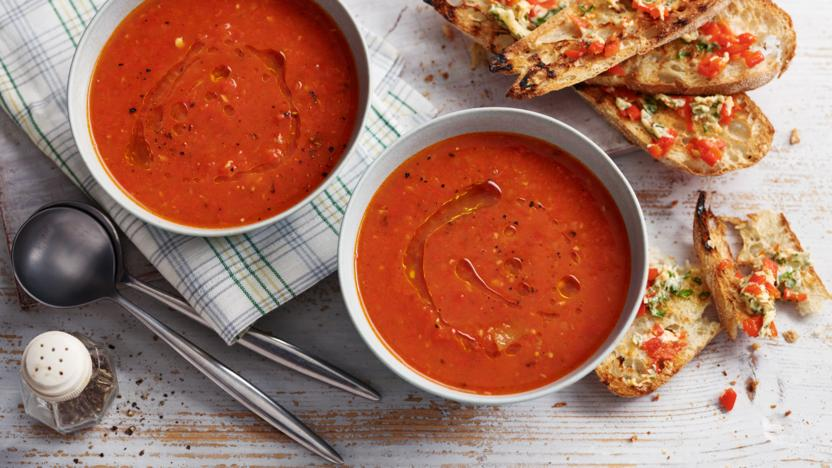

Red Pepper and Tomato Soup

Ingredients
- 6 red peppers, halved and deseeded
- 1 kg of ripe vine tomatoes, halved and cores removed
- 3 tbsp virgin olive oil
- 1 tbsp of dried oregano
- 800ml vegetable stock
- 2 tsp paprika
- 2 tbsp tomto puree
- Fresh basil - optional
Method
- Place prepared peppers and tomatoes in an air fryer and drizzle with olive oil, sprinkle with salt, pepper and oregano, heat until roasted.
- Place 800ml of water into a large saucepan and add a vegetable stock cube.
- Place roasted vegetables, tomato puree, paprika and reamining oil into the stock, bring to the boil and gently simmer for 15 minutes.
- Ladle mixture into a blender and blend until smooth, serve with bread and optional fresh basil seasoning.